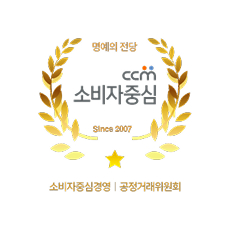
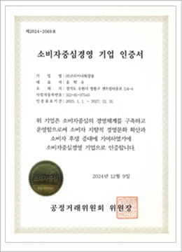
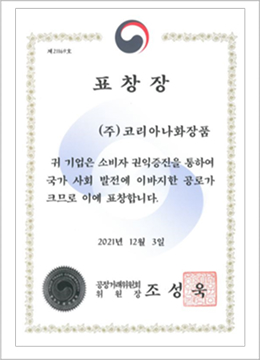
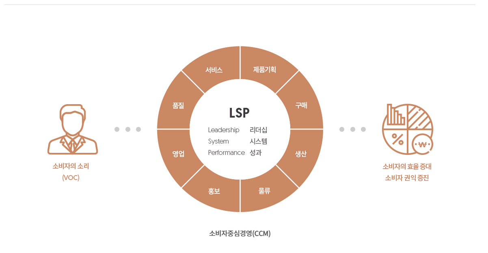

브랜드
브랜드
소비자중심기업CCM
"한국화장품은 소비자중심경영(CCM)을 통해 고객만족을 최우선으로 생각하겠습니다"
한국화장품 CCM 헌장

- 01
- 우리는 소비자의 삶에 기쁨을 주는 명품 개발과 정성과 혼이 깃든 아름다운 서비스를 실천하여 우리 사회에 행복을 나누겠습니다.
- 02
- 우리는 소비자의 입장에서 생각하고 행동하는 서비스의 제공을 최상의 가치로 여기며, 언제 어디서나 소비자와의 인연을 소중하게 지켜가겠습니다.
- 03
- 우리는 선진화 된 소비자중심경영을 성실히 실천함으로써 진정한 소비자의 편익과 만족을 우선하는 소비자중심경영을 실현하겠습니다.
소비자중심경영 인증 현황
한국화장품은 소비자중심경영을 실천하기 위해 한국소비자원이 평가하고, 공정거래위원회가 인증하는 CCM(Consumer Centered Management : 소비자중심경영)을 2007년 3월 도입하여 2008년 12월, 화장품업계 최초로 인증을 획득하였습니다.
기업의 사회적 책임 및 윤리적 사업 수행, 소비자불만 사전예방과 신속한 사후처리를 통한 제품경쟁력, 서비스경쟁력을 강화하여 행복을 나누는 한국화장품이 되도록 더욱 노력하겠습니다.


CCM이란?CONSUMER CENTERED MANAGEMENT, 소비자중심경영
기업이 수행하는 모든 활동을 소비자 관점에서 소비자 중심으로 구성하고 관련 경영활동을 지속적으로 개선하고 있는지를 평가하여 인증하는 제도입니다.
소비자(consumer)와 기업(company)이 단단하게 얽힌 모습으로 서로를 이해하고 신뢰하며 하나로 되어가는 과정을 형상화함.
오렌지는 서로를 이해하고 만족하는 소비자중심경영의 감성적인 부분
블루와 그레이는 서로간의 신뢰 및 신속·명확한 처리 등 소비자중심경영의 이성적인 부분을 상징함
소비자중심경영 LSP 체계

* 기존 CCMS(Consumer Centered Management System, 소비자 만족 자율관리 프로그램) 평가기관이 2011년 한국소비자원으로 이관, 9월 1일자로 명칭이 CCM으로 변경되었습니다.